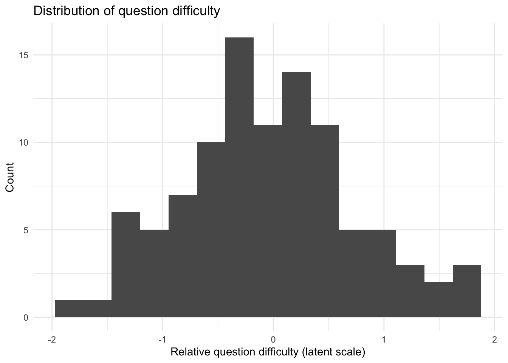

The purpose of this study is to simulate what could happen due to the flaws outlined in this article:
Cuellar, M., Vanderplas, S., Luby, A., & Rosenblum, M. (2024). Methodological problems in every black-box study of forensic firearm comparisons. Law, Probability and Risk, 23(1), mgae015.
Data generation
Number of examiners and comparisons
First, install the packages used in the analysis if they are not already available on the machine.
Now generate the examiner panel. Each examiner gets a latent skill value and a separate tendency to call a comparison inconclusive.
Examiner performance
examiner_panel <-tibble(examiner_id =paste0("E", 1:n_examiners),examiner_skill =rnorm(n_examiners, mean =0, sd = examiner_sd),examiner_inconclusive_tendency =rnorm(n_examiners, mean =0, sd = examiner_sd /2))
Next, combine the shared question set with the examiner panel so that every examiner sees the same questions. Then compute a challenge score for each examiner-question pair.
dim(sim_test) # there are 50 examiners, with 100 questions each, for 5000 total responses
[1] 5000 8
Simulated responses
Now define the response model for a single examiner-question pair. The baseline false positive, false negative, and inconclusive rates are treated as average rates in the population. For each examiner-question pair, those baseline probabilities are moved up or down on the log-odds scale according to the challenge of that pairing, so harder questions and weaker examiners lead to higher error probabilities while easier questions and stronger examiners lead to lower ones.
Then inspect a small, readable slice of the simulated responses to check whether the generated data look sensible. The table below shows the first several rows from the first few examiners.
Each row in this table is one examiner-question pair. The columns identify the examiner, the question, the true status of the comparison, the latent difficulty of the question, the latent skill and inconclusive tendency of the examiner, the overall challenge of that pairing, and the simulated response that the examiner gave.
What the simulated data look like
These summary statistics describe the simulated dataset as a whole, including the number of rows, the number of unique examiners and questions, and the distribution of truth labels and responses.
# A tibble: 11 × 2
quantity value
<chr> <chr>
1 Rows in simulated dataset 5000
2 Examiners 50
3 Questions 100
4 Same-source comparisons 47.0%
5 Different-source comparisons 53.0%
6 Identification responses 41.5%
7 Elimination responses 47.5%
8 Inconclusive responses 11.0%
9 Mean examiner skill 0.03
10 Mean question difficulty -0.04
11 Mean decision challenge -0.07
These plots give a quick view of the simulated dataset. The first two plots show latent simulation quantities rather than directly observed measurements: examiner skill is a relative skill parameter, question difficulty is a relative difficulty parameter, and both are plotted on the latent scale used to generate the response probabilities. The third plot shows the mix of simulated response types.
sim_data %>%count(response) %>%ggplot(aes(x = response, y = n, fill = response)) +geom_col(show.legend =FALSE) +labs(title ="Distribution of simulated responses",x ="Response",y ="Count" ) +theme_minimal()

Evaluation of performance
Now convert the raw responses into performance indicators at the comparison level, including whether the response was correct, false positive, false negative, true positive, true negative, or inconclusive.
NOTE: We should probably provide a likelihood ratio here instead of the FPR, FNR, etc. ALso, note how the FPR and FNR are being calculated regarding the inconclusives.
Now show performance across all examiners.
Performance across examiners
Finally, average the examiner-level summaries to produce an overall description of the simulated study.
Consequences of having flaws A-F from Cuellar et al. 2024
A. Inadequate sample size
Small sample size matters because it does not merely make error-rate estimates less precise. It can also make them look more reassuring than the design justifies. With too few examiners or too few comparisons, a study can easily observe very few errors, or even no errors at all, simply by chance.
To illustrate that problem, the next analysis repeats the entire study many times at three different sizes. For each simulated study, it calculates pooled false positive and false negative rates, approximate confidence interval widths, and whether the study observed zero false positives. The point is not to recover one correct estimate, but to show how unstable the reported estimates are when the study is too small.
Repeated simulated studies at different sample sizes
First, define a function that simulates one complete study at a given number of examiners and comparisons, using the same data-generating process introduced above.
Now define a function that summarizes one simulated study. Here the false positive and false negative rates are calculated with the appropriate denominators: non-matches for the false positive rate and matches for the false negative rate.
Now specify three study sizes. The small study has few examiners and few comparisons, the medium study is larger but still limited, and the large study is closer to the baseline design used above.
Now simulate many studies under each scenario. Repeating the study many times shows the range of error-rate estimates that one could easily obtain from the same underlying process.
The next plot shows the distribution of false positive rate estimates across the repeated studies. Small studies produce much more variable estimates, including many studies that report no false positives at all.
This final plot shows how the average width of the confidence intervals shrinks as the study gets larger. Small studies do not simply have noisier estimates; they also carry much greater uncertainty.
Taken together, these simulations show that inadequate sample size can produce error-rate estimates that appear reassuring simply because the study is too small to reveal the underlying variability. A small study may report very low observed error rates, or even zero observed false positives, without providing strong evidence that the true error rate is comparably low.
B. Non-representative sample AMANDA
C. Non-representative testing conditions and environment (Contextual bias) MARIA
Use Scurich and Dror’s numbers to show bias here.
D. Inconclusive responses are treated as correct or ignored e.g., If you treat them as correct the FPR is 0.1%, if you treat them as incorrec it’s 90% etc.
E. Invalid or nonexistent uncertainty measures for error rates This is just a statistical requirement. No need for a simulation.
Note: Look at Hicklin 2024 bootstrap sample (still invalid because non-representative sample, but we can use it to compare).